在Java 8 发布3年多后，Java 9 终于在2017年9月21日正式发布。Java 9 提供了超过150项新功能特性，包括备受期待的模块化系统、 可交互的REPL工具jShell、JDK编译工具、Java公共API和私有代码，以及安全增强、扩展提升和性能管理改善等。在学习这些新特性之前，我们得先安装好JDK 9，JDK 9 下载地址：https://www.oracle.com/technetwork/cn/java/javase/downloads/jdk9-downloads-3848520-zhs.html。
模块化
Java 9 中的模块化（Module）类似于ES6中的模块化，都是为了解决项目中减少内存的开销，提供可维护性和系统性能而提出的。通俗地说，Java 9 的模块化本质上就是在包（package）上再包裹一层（Module），默认模块里的内容都是隐藏的，只能通过（exports）关键字来暴露模块里的内容，而别的模块需要用到这些内容则需要使用（requires）关键字来导入。
下面我们用代码来演示这一个新特性。
新建一个Java 工程，然后在工程下面创建一个名为ModuleOne的模块：
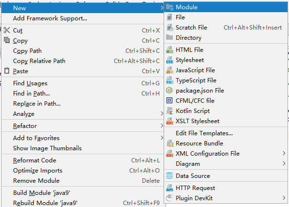
同样的，我们再创建一个ModuleTwo模块，创建完后项目目录如下所示：
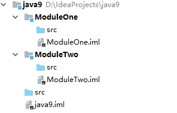
接着我们在ModuleOne的src目录下创建cc.mrbird.domain包，并创建一个名为Person的类：
1 | package cc.mrbird.domain; |
然后在ModuleTwo的src目录下创建一个cc.mrbid.test包，并且创建一个Test类，用于待会测试。
至此，工程目录结构如下所示:
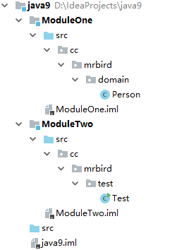
我们在ModuleTwo的Test类下试图引入ModuleOne的Person类，会发现是行不通的：
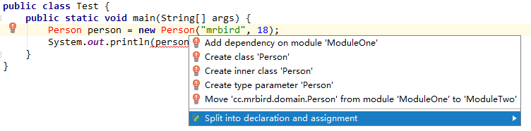
正如上面所说，模块里的东西默认都是隐藏的，要让其可以被别的模块使用，需要通过exports关键字来暴露它们。
在ModuleOne模块下的src上右键，新建一个module-info.java：
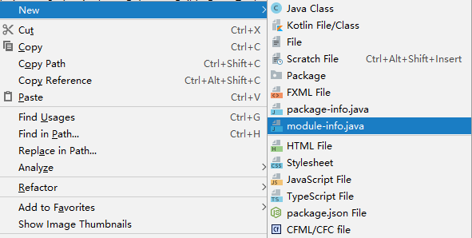
代码如下所示:
1 | module ModuleOne { |
上面代码中导出了cc.mrbird.domain包下的所有内容，对别的模块来说，它们是可见的了。
然后同样地在ModuleTwo模块下的src上右键，也新建一个module-info.java，代码如下所示:
1 | module ModuleTwo { |
这里我们主要做的是将ModuleOne导入进来，所以其暴露的cc.mrbird.domain包下的内容就可以在ModuleTwo下被使用了。
这时候回到ModuleTwo模块下的Test类，IDEA会自动帮我们导入需要的类，代码就不会报错了：
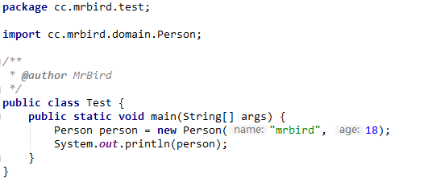
我们继续在Test类中加入一些内容：
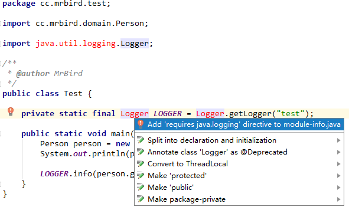
上面我们使用了java.util.logging.Logger来打印日志，但是代码编译是不通过的，使用Alt+Enter快捷键后选择第一项，IDEA会自动帮我们在module-info.java文件中导入需要的包，非常方便。
导入后，module-info.java下的代码如下所示：
1 | module ModuleTwo { |
总的来说，通过模块化来构建项目可以带来以下好处:
减少内存的开销；
简化各种类库和大型应用的开发和维护；
改进其安全性，可维护性，提高性能。
jshell命令
在Java 9 之前，我们要想使用Java来输出一句hello world或者计算两个数的和都必须创建一个Java项目，然后创建类在里面写main方法来运行。Java 9 后就不必这样了，其提供了REPL工具：jshell。利用 jshell 在没有创建类的情况下直接声明变量，计算表达式，执行语句。即开发时可以在命令行里直接运行 Java 的代码，而无需创建 Java 文件。
在JDK 9 的bin目录下有个jshell.exe文件，我们运行它：
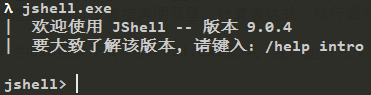
下面演示一些jshell的常用操作。
基本使用
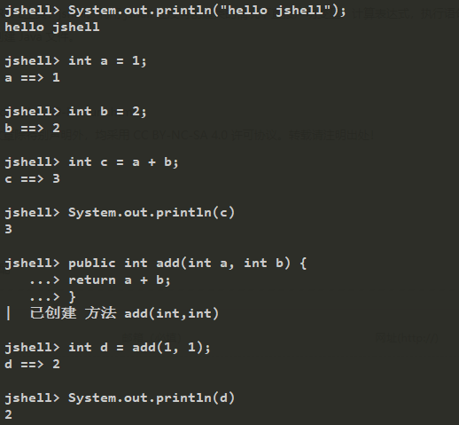
在jshell中，代码末尾的;是可选的。
导包操作
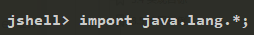
查看所有已经导入的包
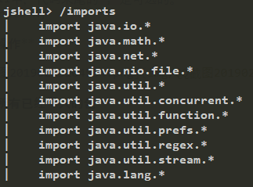
使用Tab键补全代码
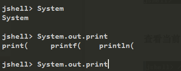
查看当前环境下所有有效代码
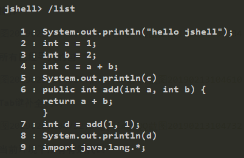
查看当前环境下所有变量
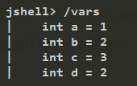
查看当前环境下所有方法
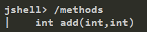
使用外部代码编辑器来修改add方法
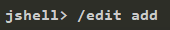
界面弹出：
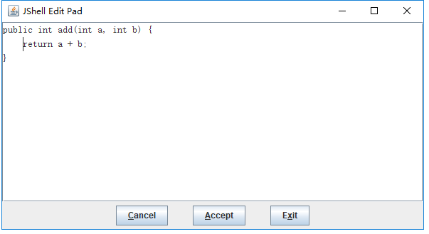
修改完毕点击Accept和Exit按钮即可：
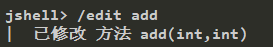
加载外部代码
在桌面新建一个Hello.java文件：
1 | public void hello() { |
然后使用/open命令执行这个文件：
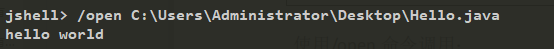
更多关于jshell的功能介绍，可以使用/help命令来查看。
接口中的私有方法
我们都知道，在JDK 8之前，接口只能包含public static final的成员变量和public abstract修饰的抽象方法；而在JDK 8中，接口中可以定义静态方法和默认方法了；JDK 9的接口又加了新的特性，其允许接口中包含私有的方法，下面这个接口定义在JDK 9 中是合法的：
1 | public interface TestInterface { |
Diamond Operator使用升级
在Java 9 之前的版本中，我们不能将钻石操作符（Diamond Operator）和匿名实现类放在一起使用，比如下面这个例子在Java 9 之前的版本中编译是不通过的：
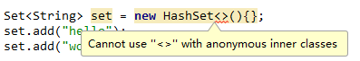
而在Java 9中取消了这个限制，我们可以通过这个特性来进行一些初始化操作:
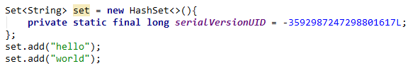
try使用升级
在Java 9 之前，我们可以使用下面这种优雅的方式来进行流的关闭操作：
1 | try (InputStreamReader reader = new InputStreamReader(System.in)) { |
在try后面的括号中声明初始化的流Java会自动帮我们进行关闭操作。Java 9 对这个特性进行了升级，我们可以在try后面的括号中使用已经初始化过的资源，此时的资源是final的：
1 | InputStreamReader reader = new InputStreamReader(System.in); |
如果对reader再次进行赋值操作，编译将不通过：
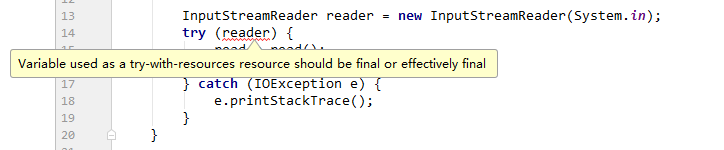
下划线标识符的限制
Java 8 中，我们可以使用下划线_作为标识符使用，比如下面这段代码是合法的：
1 | String _ = "mrbird"; |
而在Java 9 中，下划线_已经不能用于标识符了：
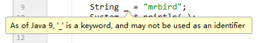
String存储结构变更
Java 9 之前，字符串的底层是用char[]进行存储的，Java 9 中，字符串改用成了byte[]进行存储:
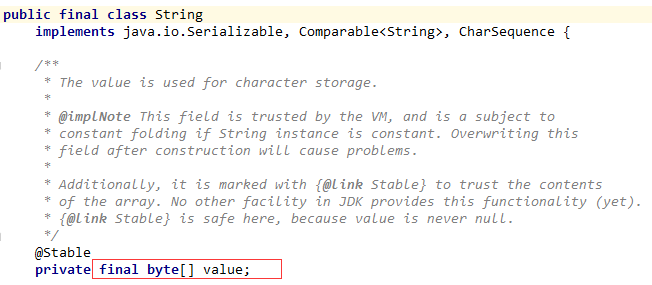
之所以做出这个改变是因为：大多数String类型对象存储的都是拉丁字符，这些字符只占一个字节，而char能够存储两个字节，所以大部分情况下都浪费了一半的存储空间。Java 9 将String类的内部表示从UTF-16的char数组更改为byte数组加上encoding-flag字段。新String类将根据字符串的内容存储编码为ISO-8859-1 / Latin-1（每个字符一个字节）或UTF-16（每个字符两个字节）的字符。encoding-flag编码标志将指示使用哪种编码。
基于String的类如StringBuffer和StringBuilder等也是做出了相同的改变。
具体可参考：http://openjdk.java.net/jeps/254。
集合的of方法
Java 9 之前我们可以使用下面的方式来创建不可变集合：
1 | List<Integer> list = Collections.unmodifiableList(Arrays.asList(1, 2, 3)); |
Java 9 中的集合类都添加了一个of方法，可以快速的构造不可变集合：
1 | List<Integer> list = List.of(1, 2, 3); |
对不可变集合进行赋值操作将抛出异常：
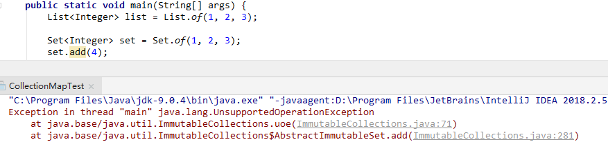
增强的Steam API
在 Java 9 中，Stream API变得更好，Stream接口中添加了 4 个新的方法：dropWhile, takeWhile, ofNullable，还有个 iterate方法的新重载方法，可以让你提供一个Predicate（判断条件）来指定什么时候结束迭代。
下面举例来演示这几个的用法：
takeWhile
takeWhile用于从Stream中获取一部分数据，接收一个Predicate来进行选择。在有序的Stream中，takeWhile返回从开头开始的尽量多的元素。
1 | List<Integer> list = Arrays.asList(45, 43, 76, 87, 42, 77, 90, 73, 67, 88); |
结果输出:
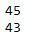
程序从头开始判断当前值是否小于50，当判断到第三个元素76时，发现不满足，于是程序就结束了。所以takeWhile不同于过滤器。
dropWhile
dropWhile的行为与takeWhile相反，返回剩余的元素：
1 | List<Integer> list = Arrays.asList(45, 43, 76, 87, 42, 77, 90, 73, 67, 88); |
程序输出:
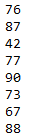
ofNullable
Java 8 中Stream不能完全为null（只有一个元素，且为null），否则会报空指针异常。而Java 9 中的ofNullable 方法允许我们创建一个单元素 Stream，可以包含一个非空元素，也可以创建一个空 Stream：
1 | // 报 NullPointerException |
Steam iterator的重载方法
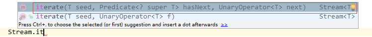
1 | // Java 8 中的 |
除了上面几个新特性外，Java 9 还支持将optional转换为流的操作：
1 | List<String> list = new ArrayList<>(); |
程序输出：
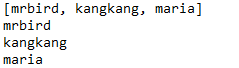
HTTP Client
Java 9 中新增了全新的HttpClient来替代HttpURLConnection，其可以从jdk.incubator.httpclient模块中获取。因为在默认情况下，这个模块是不能根据classpath获取的，需要使用add modules命令选项配置这个模块，将这个模块添加到 classpath中。
我们在src下的module-info.java中引入这个模块：
1 | requires jdk.incubator.httpclient; |
写个基于HttpClient的例子:
1 | HttpClient client = HttpClient.newHttpClient(); |
输出结果：
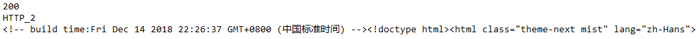